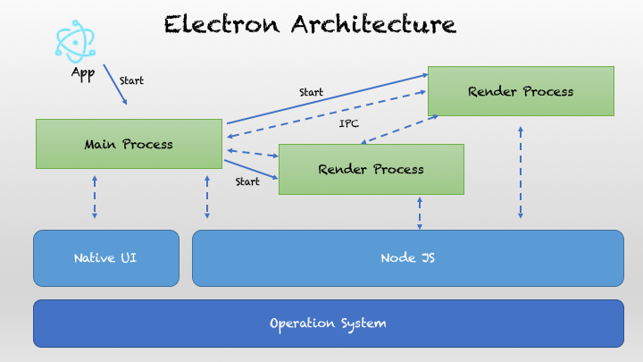
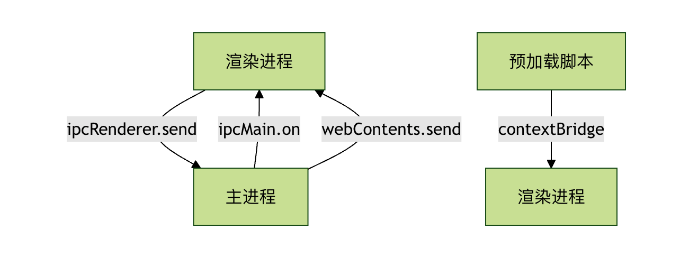

Electron 架构
可以把 Electron 看成是：
一个多进程的应用容器，内置了一个浏览器引擎 (Chromium) 和一个 Node.js 运行时，
通过进程间通信（IPC）协同运行，实现"网页 + 系统能力"的桌面应用。
它的核心组成是：
| 角色 | 说明 | 类比 |
|---|---|---|
| Main Process（主进程） | Electron 的大脑，控制应用生命周期、创建窗口、调用系统 API | 操作系统管理者 |
| Renderer Process（渲染进程） | 每个窗口运行的网页环境（HTML、CSS、JS） | 浏览器标签页 |
| Preload Script（预加载脚本） | 在渲染前运行，可桥接主进程 API 给网页用 | 安全"中间层" |
| IPC（进程通信） | 主进程与渲染进程间的通信通道 | 电话线 |
| BrowserWindow 对象 | 主进程创建的"窗口容器"，里面加载网页 | 浏览器窗口 |
| App 模块 | 控制应用生命周期（启动、退出） | 总控 |

主进程 (Main Process)
主进程是 Electron 应用的"大脑"，每个 Electron 应用有且只有一个主进程。它负责：
- 创建和管理应用窗口（渲染进程）
- 处理应用程序生命周期（启动、退出、前后台切换）
- 与操作系统原生 API 交互
- 管理菜单、对话框等系统级组件
实例
// main.js - 主进程示例
const { app, BrowserWindow } = require('electron');
function createWindow() {
// 创建浏览器窗口
const mainWindow = new BrowserWindow({
width: 800,
height: 600,
webPreferences: {
nodeIntegration: true,
contextIsolation: false
}
});
// 加载应用的 index.html
mainWindow.loadFile('index.html');
}
// 当 Electron 完成初始化时调用
app.whenReady().then(createWindow);
const { app, BrowserWindow } = require('electron');
function createWindow() {
// 创建浏览器窗口
const mainWindow = new BrowserWindow({
width: 800,
height: 600,
webPreferences: {
nodeIntegration: true,
contextIsolation: false
}
});
// 加载应用的 index.html
mainWindow.loadFile('index.html');
}
// 当 Electron 完成初始化时调用
app.whenReady().then(createWindow);
渲染进程 (Renderer Process)
渲染进程负责显示用户界面，每个 Electron 窗口都是一个独立的渲染进程：
- 运行在 Chromium 浏览器环境中
- 使用 HTML、CSS、JavaScript 构建界面
- 每个窗口都是独立的进程，互不影响
- 通过 IPC 与主进程通信
实例
<!-- index.html - 渲染进程示例 -->
<!DOCTYPE html>
<html>
<head>
<title>我的 Electron 应用</title>
</head>
<body>
<h1>Hello Electron!</h1>
<button id="btn">点击我</button>
<script>
// 渲染进程中的 JavaScript
document.getElementById('btn').addEventListener('click', () => {
alert('按钮被点击了！');
});
</script>
</body>
</html>
<!DOCTYPE html>
<html>
<head>
<title>我的 Electron 应用</title>
</head>
<body>
<h1>Hello Electron!</h1>
<button id="btn">点击我</button>
<script>
// 渲染进程中的 JavaScript
document.getElementById('btn').addEventListener('click', () => {
alert('按钮被点击了！');
});
</script>
</body>
</html>
预加载脚本 (Preload Scripts)
预加载脚本是连接主进程和渲染进程的"桥梁"：
- 在渲染进程加载网页之前运行
- 有权访问 Node.js API 和 DOM
- 通过 contextBridge 安全地暴露 API 给渲染进程
实例
// preload.js - 预加载脚本示例
const { contextBridge, ipcRenderer } = require('electron');
// 向渲染进程暴露安全的 API
contextBridge.exposeInMainWorld('electronAPI', {
showDialog: (message) => ipcRenderer.invoke('show-dialog', message)
});
const { contextBridge, ipcRenderer } = require('electron');
// 向渲染进程暴露安全的 API
contextBridge.exposeInMainWorld('electronAPI', {
showDialog: (message) => ipcRenderer.invoke('show-dialog', message)
});
进程间通信 (IPC)
IPC 通信模式
IPC（Inter-Process Communication） 是 Electron 的通信核心。
由于主进程与渲染进程是独立的，所以必须通过 IPC 传递数据。

通信方向
| 类型 | 主进程监听 | 渲染进程发送 |
|---|---|---|
| 渲染 → 主 | ipcMain.on(channel, handler) |
ipcRenderer.send(channel, data) |
| 主 → 渲染 | event.sender.send(channel, data) |
ipcRenderer.on(channel, callback) |
基本通信示例
主进程代码：
实例
const { ipcMain, dialog } = require('electron');
// 监听来自渲染进程的消息
ipcMain.handle('show-dialog', async (event, message) => {
const result = await dialog.showMessageBox({
type: 'info',
message: message,
buttons: ['确定', '取消']
});
return result;
});
// 监听来自渲染进程的消息
ipcMain.handle('show-dialog', async (event, message) => {
const result = await dialog.showMessageBox({
type: 'info',
message: message,
buttons: ['确定', '取消']
});
return result;
});
渲染进程代码：
实例
// 通过预加载脚本暴露的 API 进行通信
document.getElementById('btn').addEventListener('click', async () => {
const result = await window.electronAPI.showDialog('你好，Electron！');
console.log('用户点击了:', result.response);
});
document.getElementById('btn').addEventListener('click', async () => {
const result = await window.electronAPI.showDialog('你好，Electron！');
console.log('用户点击了:', result.response);
});
架构优势与特点
优势对比
| 特性 | Electron | 传统桌面开发 |
|---|---|---|
| 开发技术 | Web 技术 (HTML/CSS/JS) | 原生语言 (C++/C#/Java) |
| 跨平台支持 | 一次开发，多平台运行 | 需要为每个平台单独开发 |
| 开发效率 | 高，利用现有 Web 生态 | 较低，需要学习平台特定技术 |
| 性能 | 相对较低，占用资源较多 | 高，原生性能 |
| 安装包大小 | 较大（包含 Chromium） | 较小 |
核心特点
- 跨平台一致性：应用在所有操作系统上外观和行为一致
- Web 生态利用：可以直接使用 npm 包和 Web 框架
- 快速原型开发：基于熟悉的 Web 技术，开发周期短
- 丰富的 API：提供访问系统原生功能的完整 API 集
实际应用示例
让我们创建一个简单的文件管理器应用来演示 Electron 架构：
主进程 (main.js)：
实例
const { app, BrowserWindow, ipcMain, dialog } = require('electron');
const fs = require('fs').promises;
const path = require('path');
let mainWindow;
function createWindow() {
mainWindow = new BrowserWindow({
width: 1000,
height: 700,
webPreferences: {
preload: path.join(__dirname, 'preload.js'),
contextIsolation: true
}
});
mainWindow.loadFile('index.html');
}
// 处理文件读取
ipcMain.handle('read-file', async (event, filePath) => {
try {
const content = await fs.readFile(filePath, 'utf-8');
return { success: true, content };
} catch (error) {
return { success: false, error: error.message };
}
});
// 处理文件选择
ipcMain.handle('select-file', async () => {
const result = await dialog.showOpenDialog(mainWindow, {
properties: ['openFile'],
filters: [
{ name: '文本文件', extensions: ['txt', 'md', 'js', 'html', 'css'] }
]
});
return result;
});
app.whenReady().then(createWindow);
const fs = require('fs').promises;
const path = require('path');
let mainWindow;
function createWindow() {
mainWindow = new BrowserWindow({
width: 1000,
height: 700,
webPreferences: {
preload: path.join(__dirname, 'preload.js'),
contextIsolation: true
}
});
mainWindow.loadFile('index.html');
}
// 处理文件读取
ipcMain.handle('read-file', async (event, filePath) => {
try {
const content = await fs.readFile(filePath, 'utf-8');
return { success: true, content };
} catch (error) {
return { success: false, error: error.message };
}
});
// 处理文件选择
ipcMain.handle('select-file', async () => {
const result = await dialog.showOpenDialog(mainWindow, {
properties: ['openFile'],
filters: [
{ name: '文本文件', extensions: ['txt', 'md', 'js', 'html', 'css'] }
]
});
return result;
});
app.whenReady().then(createWindow);
预加载脚本 (preload.js)：
实例
const { contextBridge, ipcRenderer } = require('electron');
contextBridge.exposeInMainWorld('fileAPI', {
readFile: (filePath) => ipcRenderer.invoke('read-file', filePath),
selectFile: () => ipcRenderer.invoke('select-file')
});
contextBridge.exposeInMainWorld('fileAPI', {
readFile: (filePath) => ipcRenderer.invoke('read-file', filePath),
selectFile: () => ipcRenderer.invoke('select-file')
});
渲染进程 (index.html)：
实例
<!DOCTYPE html>
<html>
<head>
<title>简单文件管理器</title>
<style>
body { font-family: Arial, sans-serif; margin: 20px; }
.container { max-width: 800px; margin: 0 auto; }
button { padding: 10px 15px; margin: 5px; cursor: pointer; }
#content { border: 1px solid #ccc; padding: 15px; margin-top: 10px;
min-height: 300px; white-space: pre-wrap; }
</style>
</head>
<body>
<div class="container">
<h1>简单文件管理器</h1>
<button id="selectBtn">选择文件</button>
<button id="clearBtn">清空内容</button>
<div>
<h3>文件内容：</h3>
<div id="content">请选择一个文件...</div>
</div>
</div>
<script>
const selectBtn = document.getElementById('selectBtn');
const clearBtn = document.getElementById('clearBtn');
const contentDiv = document.getElementById('content');
selectBtn.addEventListener('click', async () => {
const result = await window.fileAPI.selectFile();
if (!result.canceled && result.filePaths.length > 0) {
const filePath = result.filePaths[0];
const fileResult = await window.fileAPI.readFile(filePath);
if (fileResult.success) {
contentDiv.textContent = `文件路径: ${filePath}\n\n${fileResult.content}`;
} else {
contentDiv.textContent = `读取文件失败: ${fileResult.error}`;
}
}
});
clearBtn.addEventListener('click', () => {
contentDiv.textContent = '请选择一个文件...';
});
</script>
</body>
</html>
<html>
<head>
<title>简单文件管理器</title>
<style>
body { font-family: Arial, sans-serif; margin: 20px; }
.container { max-width: 800px; margin: 0 auto; }
button { padding: 10px 15px; margin: 5px; cursor: pointer; }
#content { border: 1px solid #ccc; padding: 15px; margin-top: 10px;
min-height: 300px; white-space: pre-wrap; }
</style>
</head>
<body>
<div class="container">
<h1>简单文件管理器</h1>
<button id="selectBtn">选择文件</button>
<button id="clearBtn">清空内容</button>
<div>
<h3>文件内容：</h3>
<div id="content">请选择一个文件...</div>
</div>
</div>
<script>
const selectBtn = document.getElementById('selectBtn');
const clearBtn = document.getElementById('clearBtn');
const contentDiv = document.getElementById('content');
selectBtn.addEventListener('click', async () => {
const result = await window.fileAPI.selectFile();
if (!result.canceled && result.filePaths.length > 0) {
const filePath = result.filePaths[0];
const fileResult = await window.fileAPI.readFile(filePath);
if (fileResult.success) {
contentDiv.textContent = `文件路径: ${filePath}\n\n${fileResult.content}`;
} else {
contentDiv.textContent = `读取文件失败: ${fileResult.error}`;
}
}
});
clearBtn.addEventListener('click', () => {
contentDiv.textContent = '请选择一个文件...';
});
</script>
</body>
</html>
其他重要模块（主进程可用）
| 模块名 | 作用 |
|---|---|
app |
控制应用生命周期（启动/退出） |
Menu / MenuItem |
创建应用菜单栏 |
Tray |
系统托盘图标 |
Notification |
系统通知 |
dialog |
打开文件/保存对话框 |
shell |
调用系统默认程序打开文件或网址 |
nativeImage |
操作图片（图标） |
clipboard |
操作剪贴板内容 |
powerMonitor |
监听系统电源事件 |
screen |
获取屏幕信息（多显示器支持） |
安全架构与沙箱隔离
由于渲染进程能运行网页，为防止恶意代码攻击系统，Electron 推行以下安全设计：
| 策略 | 描述 |
|---|---|
| 关闭 NodeIntegration | 默认 false，避免网页直接调用系统 API。 |
| 启用 ContextIsolation | 让页面脚本与 Preload API 在独立上下文中运行。 |
| Preload + contextBridge | 明确控制暴露给前端的安全 API。 |
| Content Security Policy (CSP) | 限制脚本来源，防止 XSS。 |
| sandbox 模式 | 可开启沙箱使渲染进程完全隔离。 |
| 验证远程 URL | 不信任的远程内容必须进行白名单校验。 |
运行流程（从启动到渲染）
1、启动应用 (electron .)
↓
2、执行 main.js（主进程启动）
↓
3、app.whenReady() 触发，创建 BrowserWindow
↓
4、BrowserWindow 启动新的渲染进程（Chromium 实例）
↓
5、preload.js 先执行（在隔离上下文中）
↓
6、index.html 加载并显示（运行前端框架）
↓
7、渲染进程通过 IPC 调用主进程逻辑
↓
8、主进程处理请求、返回结果
↓
9、用户关闭窗口 → 主进程监听 → app.quit()
主从多窗口模型（多进程并行）
- 一个 Electron 应用始终只有 一个主进程；
- 但可以有 多个渲染进程（每个窗口独立）；
- 它们之间通信要通过主进程中转或使用
ipcMain.handle进行异步桥接。
示意：
主进程 (Main) ├── 窗口1 → 渲染进程A (index.html) ├── 窗口2 → 渲染进程B (settings.html) └── 窗口3 → 渲染进程C (dashboard.html)
Electron 内部核心组件（底层依赖）
| 层级 | 技术 |
|---|---|
| 界面渲染层 | Chromium（Blink + V8） |
| 系统接口层 | Node.js（libuv + C++ bindings） |
| 进程管理层 | Electron 内核（C++ + JavaScript） |
| 应用逻辑层 | 你的 JS / TS 代码（Main + Renderer） |
你写的 JS 代码跑在 Electron 封装的 Node 环境里，而渲染界面跑在 Chromium WebView 里。

点我分享笔记